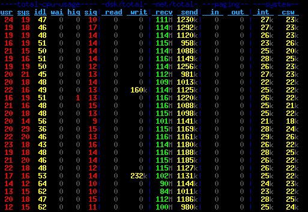

Table of contents
As explained in more detail in my my last blog post, Rackspace is providing hosting for Debian Code Search. For those of you who don’t know, Rackspace is a cloud company that provides (among other services) a public cloud based on OpenStack. That means you can easily (and programmatically, if you want) bring up virtual servers, block storage volumes, configure the network between them, etc.
As part of my initial performance experiments, I was running debmirror to clone a full Debian source mirror, and I noticed this took about one hour. Given that the peak network and storage write rates I have observed in my benchmarks are much higher, I wondered why it took so long. About 43 GB (that’s how big the Debian sid sources are) in 60 minutes means ≈ 12 MB/s download rate, which is a bit more than a sustained 100 MBit/s connection. Luckily, at least the Rackspace servers I looked at are connected with 1 GBit/s to the internet, so more should be possible. Note that these are the old Rackspace servers. There is a new generation of servers, which I have not yet tried, that apparently offer even higher performance.
After a brief look at the debmirror source code, I concluded that it can only use a single mirror and downloads files sequentially. There is some obvious potential for improvement here, and the fact that I could come up with a proof of concept written in Go to determine the files to download in a couple of minutes encouraged me to spend my saturday on this “problem” :-).
About 7 hours later, my prototype had gone through various iterations and the code could sustain about 115 MB/s incoming bandwidth for most of the time. Here is a screenshot of dstat measuring the performance:
Another 3 hours later, the most obvious bugs were weeded out and the code successfully cloned an entire mirror for the first time. I verified the correctness by running debmirror afterwards, and no files were downloaded that had not actually arrived on the mirror in the meantime.
Features
-
Parallel downloading from multiple mirrors.
Of course, it is not guaranteed that the mirrors are consistent, but that is a solvable problem: whenever a non-200 HTTP response is encountered, the file is put back into the queue and gets rescheduled onto any mirror. Eventually, it will be rescheduled onto the mirror from which the sources.gz was downloaded, and that mirror has to have it. -
HTTP keep-alive and pipelining.
debmirror also does HTTP keep-alive (I read that in the source, did not verify it), but it downloads files sequentially, i.e. it downloads one file, then sends the request for the next file. This means that after one file was received, no data is being received until another round-trip finished. For a lot of small files (think of .dsc and .debian.tar.gz files or small orig tarballs) that really adds up.
Therefore, I use HTTP pipelining: I send 99 requests and then just receive all the responses at full speed. The magic number 99 comes from the fact that this is the smallest common denominator that all mirrors I have tested allow. nginx by default allows 100 requests. -
Request ordering.
Instead of sending requests at random, I sort the download queue by size and make sure that the first request on each connection is for a big file. The intention is that TCP will adapt to that quickly and use a bigger window size as soon as possible instead of ramping up slower later on. Note that I have not actually measured the window sizes, so this is just a hunch.
Another nice side-effect of the ordering is that the amount of data that is being sent through each connection is roughly equal. This means we don’t waste TCP connections by sending 99 requests for small files only. -
(Goroutines).
I’m a bit hesitant to even write about it, so let’s make it quick: Perl (and thus debmirror) is typically single-threaded, whereas Goroutines scale nicely on multi-core systems. I don’t think it makes a big difference on the machines I am running this on as they have only two cores and are not maxed out on CPU usage at all. But maybe this will be more important for saturating 10 GBit/s? :-) -
(Mirror selection).
It’s not a feature of the code, but certainly relevant: of course I selected mirrors that are connected to the internet with at least a Gigabit link, serve files reasonably fast and have low latency to Rackspace’s Chicago presence.
Interestingly, while I used to think that universities have access to big uplinks and beefy machines, none of the mirrors that I use are located at a university. In fact, every mirror ending in.eduthat I tried was really slow — most of them providing something like 2-4 MB/s.
Results
With the latest iteration of the code, I can clone an entire Debian source mirror with ≈ 43 GB of data in about 11.5 minutes, which corresponds to a ≈ 63 MB/s download rate:
GOMAXPROCS=20 ./dcs-debmirror -num_workers=20 68,24s user 384,90s system 66% cpu 11:25,97 total
It should be noted that the download rate is very low in the first couple of seconds since the sources.gz file is downloaded from a single mirror, then unpacked and analyzed.
The peak download rate is about 115 MB/s (= 920 MBit/s) which is reasonably close at what you can achieve with a Gigabit link, I think. If the entire uplink was available to me at all time, the Rackspace hardware would be able to saturate that easily, both in terms of reading from the network and in terms of writing to block storage. I tested this on an SSD volume, but I see about 113 MB/s throughput with the internal hard disk, so I think that should work, too.
There is another dstat screenshot of the final version (writing to disk).
{kind=link}
Perhaps even more interesting to some readers is the time for an incremental update:
GOMAXPROCS=20 ./dcs-debmirror -tcp_conns=20 2013/10/13 11:09:55 Downloading 307 files (447 MB total) … 2013/10/13 11:10:04 All 307 files downloaded in 9.105605931s. Download rate is 49.186567 MB/s 4,91s user 3,99s system 67% cpu 13,205 total
The wall clock time is higher than the time reported by the code because the code does not count the time for downloading and parsing the sources.gz file.
The entire program is about 400 lines (not SLOC) of Go code. It’s part of the Debian Code Search source. If you’re interested, you can read dcs-debmirror.go in your browser.
Conclusions
The outcome of this experiment is that I now know (and have shown!) that there are significantly more efficient ways of cloning a Debian mirror than what debmirror does. Furthermore, I have a good grasp on what kind of performance the Rackspace cloud offers and I am fairly happy with the numbers :-).
My code is useful to me in context of Debian Code Search, but unless you need a sid-only source-only mirror, it will not be useful to you directly. Of course you can take the ideas that I implemented and implement them elsewhere — personally, I don’t plan to do that.
If you have hardware, bandwidth and a use-case for 10 GBit/s+ mirroring, I’d like to hear about it! :-)
Did you like this post? Subscribe to this blog’s RSS feed to not miss any new posts!
I run a blog since 2005, spreading knowledge and experience for over 20 years! :)
If you want to support my work, you can buy me a coffee.
Thank you for your support! ❤️